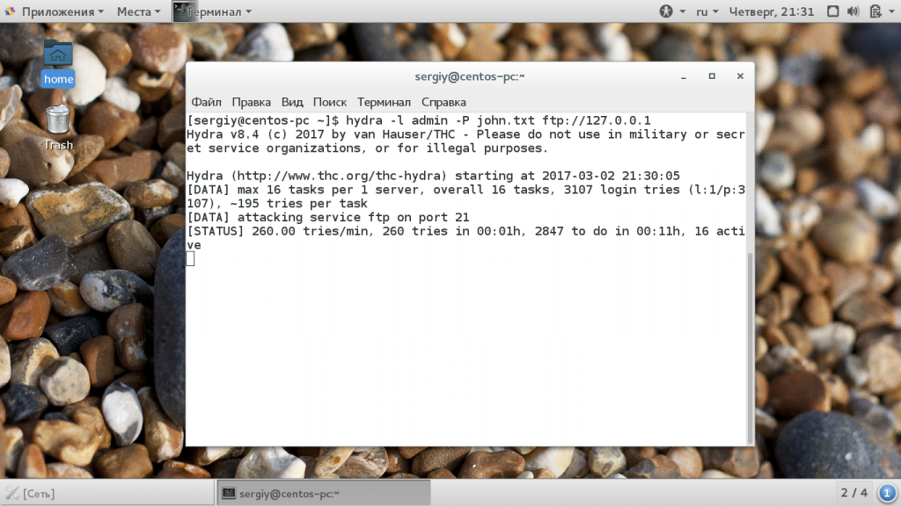
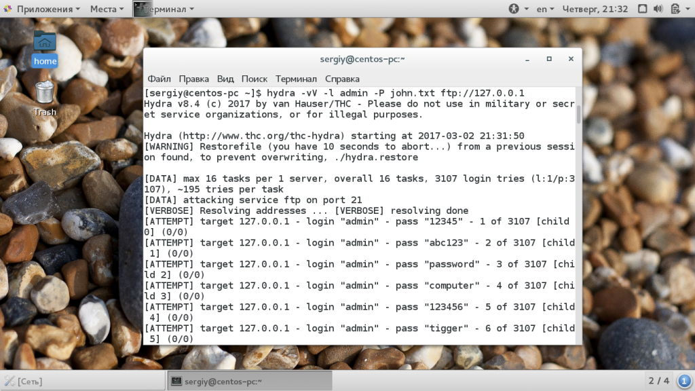
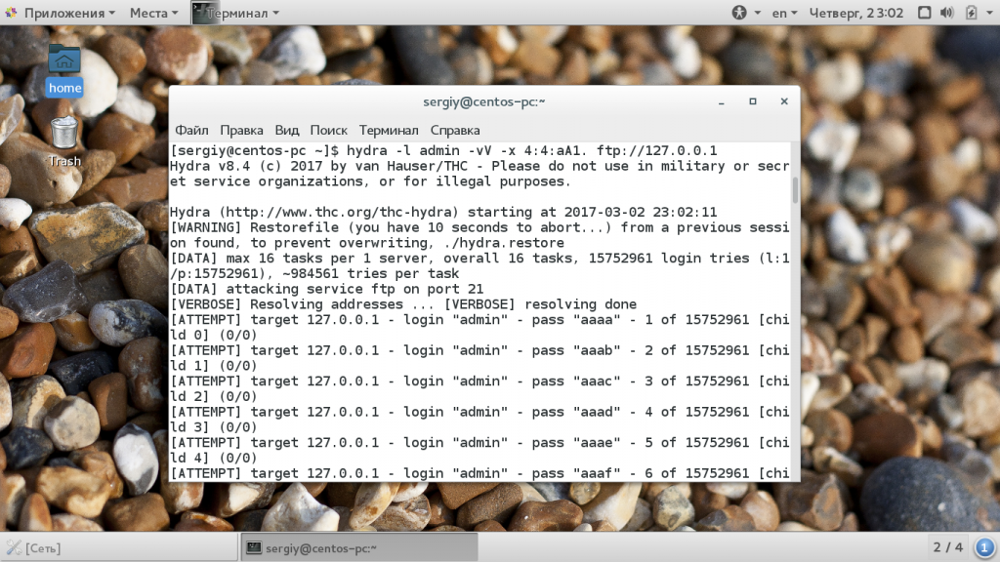
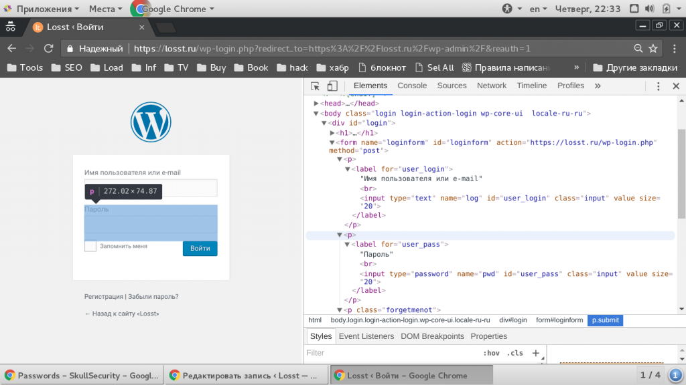
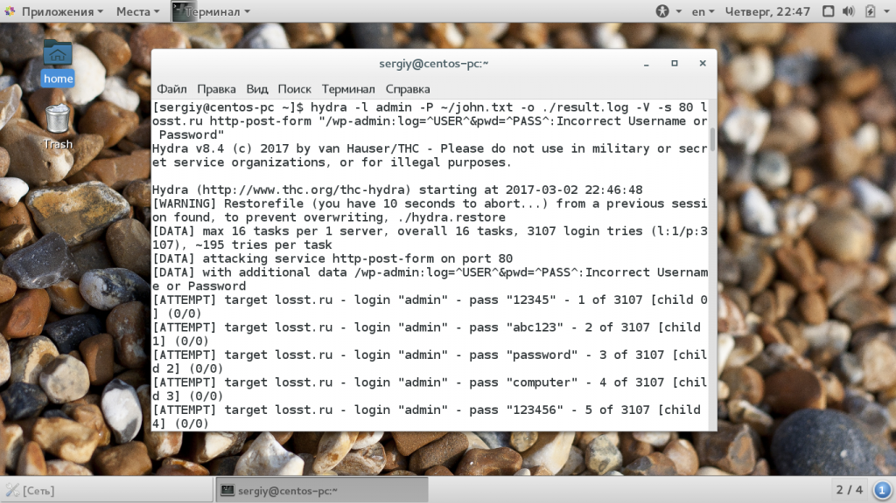
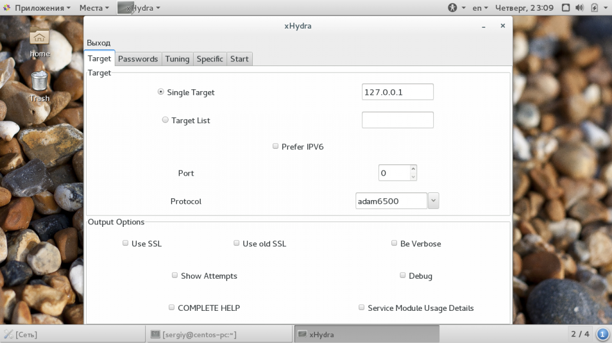

Как пользоваться Hydra
Инструкции Обновлено: 14 июля, 2017 7 admin
Тестирование безопасности серверов и веб-приложений имеет очень важное значение, поскольку если уязвимость смогли найти вы, то ее найдет и злоумышленник, а значит он сможет получить доступ к вашим персональным данным или испортить приложение. Одним из самых эффективных и очень простых методов взлома есть перебор паролей. Поэтому очень важно убедиться, что ваш пароль будет сложно перебрать.
Hydra - это программное обеспечение с открытым исходным кодом для перебора паролей в реальном времени от различных онлайн сервисов, веб-приложений, FTP, SSH и других протоколов. Особенность инструмента в том, что здесь выполняется перебор не по хэшу, а напрямую с помощью запросов к серверу, это значит что вы сможете проверить правильно ли настроены фаерволы, блокируются ли такие попытки, а также можете ли вы вообще определить такую атаку на сервер. В этой статье мы рассмотрим как пользоваться thc hydra для перебора паролей.
Первым делом нам необходимо установить этот инструмент. Это довольно популярная утилита для тестирования безопасности, поэтому вы можете найти ее в официальных репозиториях. Для установки нужных пакетов в Ubuntu выполните:
sudo apt install hydra
Чтобы установить программу в Red Hat/CentOS команда аналогичная:
sudo yum install hydra
Но в официальных репозиториях, как правило, находятся более старые версии программы. Если вы хотите самую свежую, то придется собрать ее из исходников. Но здесь нет ничего сложного. Сначала загрузим исходники последней версии с GitHub, на данный момент, это 8.4:
wget https://github.com/vanhauser-thc/thc-hydra/archive/v8.4.tar.gz
Затем необходимо их распаковать и перейти в папку с исходниками:
tar xvpzf thc-hydra-v8.4.tar.gz
$ cd thc-hydra-v8.4
Дальше выполните такие команды для компиляции и установки:
./configure
$ make
$ sudo make install
Разработчики поступили очень грамотно, когда настроили установку в /usr/local. Таким образом, утилита не распространится по всей файловой системе, а будет в одном месте. Если вы еще хотите установить графическую оболочку, то вам нужно переместиться в папку hydra-gtk и выполнить те же команды:
cd hydra-gtk
$ ./configure
$ make
$ sudo make install
Нужно заметить, что для ее сборки необходимы пакеты разработки gtk2. Но я бы не советовал вам использовать этот графический интерфейс. Если разобраться в работе с утилитой через терминал, то он совсем не нужен, тем более, что вся гибкость утилиты раскрывается через командную строку.
Перед тем как мы начнем рассматривать как пользоваться htc hydra, нам необходимо разобраться какие параметры команде передавать и как это делать. Давайте сначала рассмотрим общий синтаксис:
$ hydra опции логины пароли -s порт адрес_цели модуль параметры_модуля
Опции задают глобальные параметры утилиты, с помощью них вы можете настроить необходимые параметры, например, указать что нужно выводить информацию очень подробно, список логинов и паролей для перебора задается тоже с помощью опций, но я выделил его в отдельный пункт. Дальше нужно задать порт сервиса на удаленной машине и ip адрес цели. В конце мы задаем модуль перебора, который будем использовать и параметры модуля. Обычно это самая интересная часть но начнем мы с опций:
Это были основные опции, которые, вы будете использовать. Теперь рассмотрим модули, а также способы аутентификации, которые вы можете подобрать:
Как видите, количество доступных протоколов достаточно большое, вы можете проверить безопасность как ssh, ftp, и до веб-форм. Дальше мы рассмотрим как пользоваться hydra, как использовать самые часто применяемые протоколы.
Как вы уже догадались, hydra перебирает пароли из переданного ей файла, оттуда же берутся и логины. Также вы можете попросить программу генерировать пароли самостоятельно, на основе регулярного выражения. А вот уже их подстановка и передача на удаленный сервер настраивается с помощью строки параметров модуля. Естественно, что файлы с паролями нужно заготовить. В этой статье для примеров я буду использовать файл паролей от John the ripper, который вы можете без проблем найти в интернете. Также можно использовать словари топ500 паролей, и от Cain & Abel, где находится более 300000 пароля. Логин будем использовать только один - admin.
Сначала поговорим про использование hydra в консольной версии. На самом деле, это основная программа. Команда будет выглядеть таким образом:
hydra -l admin -P john.txt ftp://127.0.0.1

Как вы помните опция -l задает логин пользователя, -P - файл со списком паролей. Далее мы просто указываем протокол и айпи цели. Готово, вот так просто можно перебрать пароль от вашего FTP, если вы установили его слишком простым и не настроили защиты. Как видите, утилита перебирает пароли со скоростью 300 шт в минуту. Это не очень быстро, но для простых паролей достаточно опасно. Если вы хотите получить больше информации во время перебора нужно использовать опции -v и -V вместе:
hydra -l admin -P john.txt -vV ftp://127.0.0.1

Также, с помощью синтаксиса квадратных скобок, вы можете задать не одну цель, а атаковать сразу целую сеть или подсеть:
hydra -l admin -P john.txt ftp://[192.168.0.0/24]
Также вы можете брать цели из файла со списком. Для этого используется опция -M:
hydra -l admin -P john.txt -M targets.txt ftp
Если подбор по словарю не сработал, можно применить перебор с автоматической генерацией символов, на основе заданного набора. Вместо списка паролей нужно задать опцию -x а ей передать строку с параметрами перебора. Синтаксис ее такой:
минимальная_длина:максимальная_длина:набор_символов
С максимальным и минимальным количеством, я думаю все понятно, они указываются цифрами. В наборе символов нужно указать a для всех букв в нижнем регистре, A - для букв в верхнем регистре и 1 для всех цифр от 0 до 9. Дополнительные символы указываются после этой конструкции как есть. Например:
Вся команда будет выглядеть вот так:
hydra -l admin -x 4:4:aA1. ftp://127.0.0.1

Можно пойти другим путем и указать ip цели и порт вручную с помощью опции -s, а затем указать модуль:
hydra -l admin -x 4:4:aA1 -s 21 127.0.0.1 ftp
Пароли для ssh, telet и других подобных сервисов перебираются подобным образом. Но более интересно рассмотреть перебор паролей для http и html форм.
Перебор пароля аутентификции HTTP
Различные роутеры часто используют аутентификацию на основе HTTP. Перебор пароля от такого типа формы входа выполняется очень похожим образом на ftp и ssh. Строка запуска программы будет выглядеть вот так:
hydra -l admin -P ~/john.txt -o ./result.log -V -s 80 127.0.0.1 http-get /login/
Здесь мы использовали логин admin, список паролей из файла john.txt, адрес цели 127.0.0.1 и порт 80, а также модуль http-get. В параметрах модулю нужно передать только адрес страницы входа на сервере. Как видите, все не так сильно отличается.
Самый сложный вариант - это перебор паролей для веб-форм. Здесь нам нужно узнать что передает на сервер нужная форма в браузере, а затем передать в точности те же данные с помощью hydra. Вы можете посмотреть какие поля передает браузер с помощью перехвата в wireshark, tcpdump, в консоли разработчика и так далее. Но проще всего открыть исходный код формы и посмотреть что она из себя представляет. Далеко ходить не будем и возьмем форму WordPress:

Как видите, передаются два поля log и pwd, нас будут интересовать только значения полей input. Здесь несложно догадаться, что это логин и пароль. Поскольку форма использует метод POST для передачи данных, то нам нужно выбрать модуль http-post-form. Синтаксис строки параметров будет выглядеть вот так:
адрес_страницы:имя_поля_логина=^USER^&имя_поля_пароля=^PASS^&произвольное_поле=значение:строка_при_неудачном_входе
Строчка запуска программы будет выглядеть вот так:
hydra -l user -P ~/john.txt -o ./result.log -V -s 80 127.0.0.1 http-post-form "/wp-admin:log=^USER^&pwd=^PASS^:Incorrect Username or Password"

Переменные ^USER^ и ^PASS^ содержат имя пользователя и пароль взятые из словаря, также, возможно, придется передать дополнительные параметры, они передаются также, только значения будут фиксированы. Заканчивается выражение строкой, которая присутствует на странице при неудачном входе. Скорость перебора может достигать 1000 паролей в минуту, что очень быстро.
Хотелось бы еще сказать несколько слов про графическую версию. Это просо интерфейс, который помогает вам сформировать команду для консольной hydra. Главное окно программы выглядит вот так:

Здесь есть несколько вкладок:
Я думаю, вы без труда во всем этом разберетесь когда освоите консольный вариант. Например, так выполняется настройка перебора паролей ftp:
В этой статье мы рассмотрели как пользоваться hydra для перебора паролей от различных сетевых сервисов онлайн, а также тестирования безопасности своих систем. Помните, что использовать такие инструменты против чужих систем - преступление. Вы можете тестировать только свои машины и службы. Проводить время от времени такое тестирование в большой компании может быть крайне полезно.